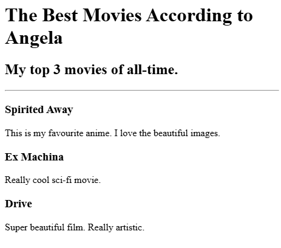
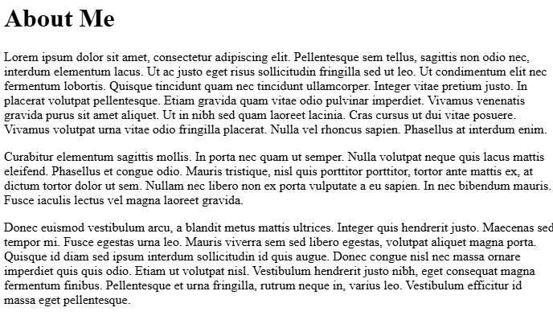
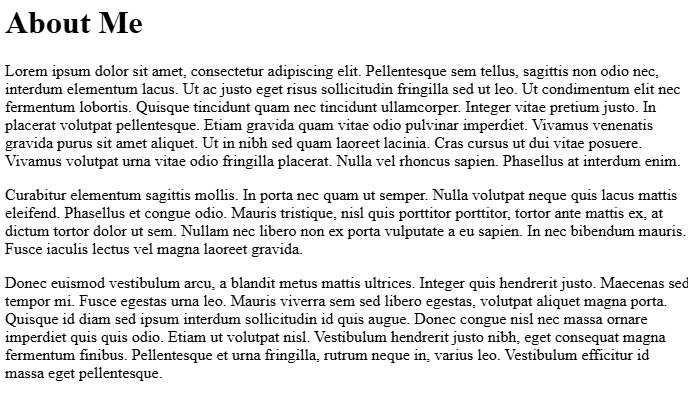

My Projects
Top 3 Movies

About Me
This is a brief description about me and my work.
Birthday Invite

Top 3 movies again
If you would like to get in touch, please reach out via email or social media down below.

This is a brief description about me and my work.

If you would like to get in touch, please reach out via email or social media down below.